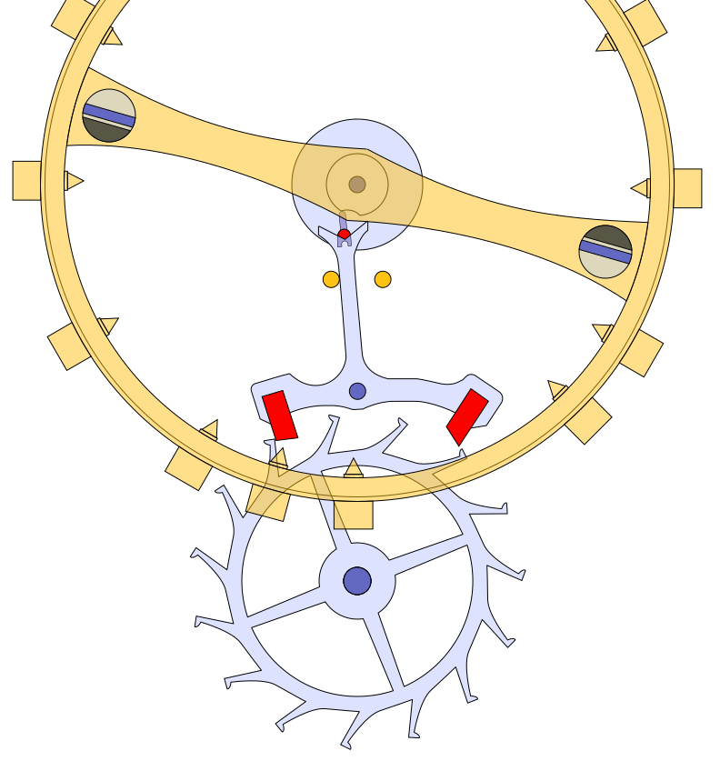

People are a kind of animal, but we happen to be smarter than other animals so most of the time we pretend we are somehow different from the rest of them. We have discovered many things over a long period of time and since a lot of these discoveries have been accidental we want to make sure that we don't forget them. That is one of the purposes of this book.
Most of the time we use a base-10 numbering system because we have ten fingers. Those numbers are:
We can describe the measurements of things using numbers and units. The unit of length is a meter. A meter is about the distance from the tip of an adult human's nose to the tip of their fingers. A more accurate method of obtaining this measurement is by ... (Uhhhh, can I find a way to describe this using only physics?)
We live on a sphere of rock called a planet, which we call Earth. Earth has a mean radius of 6,371.0088 km. It rotates once a day and because of this it's not really a sphere, it bulges in the middle and the equitorial radius is 6,378.1370 km while the polar radius is 6,356.7523 km. The force that causes this is called centrifugal force. The circumference of the Earth at the equator is 40,075.017 km and this can be derived from the radius at the equator using a magic number called π which is about 3.141592653589793. The circumference is 2 times π times the radius.
We are held down on earth because of another force called gravity. All things have gravity and bigger things have more gravity. Really big things like Earth have enough gravity to keep us from falling up. Earth's gravity pulls us down at a rate of 9.80665 m/s². Humans also have gravity that pulls other things into us but it's so small that we pretend it doesn't exist.
Earth is going around a star that we call the Sun. The Sun is that bright yellow thing that appears to rise up from the land in the morning and goes back down at night. Stars are spheres of gas similar to planets but they are so big that they create energy by squeezing together the very tiny pieces of stuff that everything is made of. We can see one star during the day, the Sun, and about 1000 stars at night. However, there are many more stars out there too far away for us to see. We think there are about 1,000,000,000,000,000,000,000,000 stars out there. Because that's a really big number we sometimes write it as 10²⁴ since there are 24 zeros.
Actually, 5 of the things that look like stars in the night sky aren't stars, they are other planets. While the rest of the all appear to move together through the night, the planets move around in different ways. And 9 of the things that look oike stars are actually really really big groups of stars called galaxies but I'll get to those later.
The Sun looks like it's going up and down or around us in a circle but it's looks that way because the Earth is spinning around coming back to the same place once a day. A day seems like something that doesn't change but there are really many ways to define a day and thus many ways to define time. A day in apparent solar time is the time it takes for the sun to go from the highest point in the sky on one day to the highest point in the sky on the next day. The length of a solar day varies throughout the year. This is because the Earth moves faster when it's closer to the sun and slower when it's further away and because the earth is tilted when compared to how it moves around the sun (I don't actually understand the geometry and math behind this second reason). The mean solar day is the average of these and is about 86,400.002 seconds. Because the Moon also has a gravitational pull on Earth, Earth's rotation is slowing down slowly over time. Therefore, we will need to add about 0.0014 seconds to the mean solar day every 100 years. When a day is defined by the apparent location of the other stars in the sky then a day is defined as 86,164.098903691 seconds.
If two people look up at the sky at the exact same time in different parts of the world the sun will be in different parts of the sky. Conversely, you can figure out exactly where on earth you are by knowing the time and the location of the Sun (or the stars). You can measure the passage of time accurately with many different ways. One of the easiest ways is by having a certain known amount of sand or water in a vessel with a hole in the bottom of it. It will always take the same amount of time for the sand or water to completely empty out of the vessel. Another way is to swing something heavy. The heavy thing will always take the same amount of time to travel back and forth whether it's traveling far at the beginning or a short distance as it loses energy. This movement can be used to move a wheel a discrete amount during each swing. This is one way to draw a wheel that could be used for this purpose. 
The time it takes the Earth to go around the Sun is a year. This too can be calculated in many different ways. The solar year is 365.24217 mean solar days.
The Moon goes around the Earth and the Earth and the other planets go around the Sun. This movement is called an orbit and it is caused by gravity. (Ugh, how to I explain orbital mechanics?)
The earth weighs about 5,972,370,000,000,000,000,000,000 kg or about 6 x 10²⁴. A kg is a unit of weight defined by a cube of water with all 3 sides being 0.1 meters in length. An adult person weighs about 60 kg. The earth is made up of a solid layer on top which we can see but the center is so hot that the rock is melted into a liquid, just like ice melts into water. The melted rock is mostly made of a material called iron which has an interesting property that when it moves it creates energy that we can measure and use called magnetism. One interesting feature of this is that we can tell which direction is which even when we can't see the sun and the stars because another piece of this material will always point towards to same place. If you put a small piece of this material on some water and move the dish of water around in a circle then the piece of material will always point to the same place. We call the place it points to north. And right now it's very close to the axis of spin that the earth rotates around but it won't always be there.
The galaxies I mentioned above are big groups of stars. All of the stars we can see are in our own galaxy. And each of those 9 other galaxies we can see have similar numbers of stars in them. We think that there are about 100,000,000,000 stars in our galaxy but most are so far away that we can't see them. Galaxies are held together by gravity, just like we are being held onto the earth and the earth is being held close to the sun. We also think there are about 2,000,000,000,000,000 other galaxies that we theoretically could be able to see. The reason we wouldn't be able to see more galaxies further away is because the light from those galaxies hasn't had enough time to reach our eyes. This is because light takes time to go from one place to another. It seems instanteous to us because it's really really fast but between objects that are really really far away it takes a potentially very long time to travel that distance. Light travels at exactly 299,792,458 meters per second. It's exact because we've defined a meter and a second to fit this number.
Because the earth is round and curves away from you when you are standing on flat ground you can only see about 5 km before the earth curves away from you. If you are standing on the tallest mountain you can see as far as 370 km. It takes like only 0.0012 seconds for light to travel that distance. It takes 1.282 seconds for light to travel from the moon to the earth and it takes about 4.643 seconds for light to travel from the sun to the earth. The time it takes light to travel from one side of our galaxy to the other is about 100,000 years. The time it takes to for light to travel from the nearest other galaxy to us is about 2,540,000 years. Now here's the interesting thing, because the universe is about 13,799,000,000 years old, and we can only see stuff with light, and light takes time to travel, we can only see out to the distance where there has been enough time for light to travel that distance. This is about 130,548,619,791,142,459,200,000 km from us to the furtherest distance we could thereotically see.
We think that there are just more galaxies and stars past that point. ....
We can see further because of lenses. You can make a lens by....